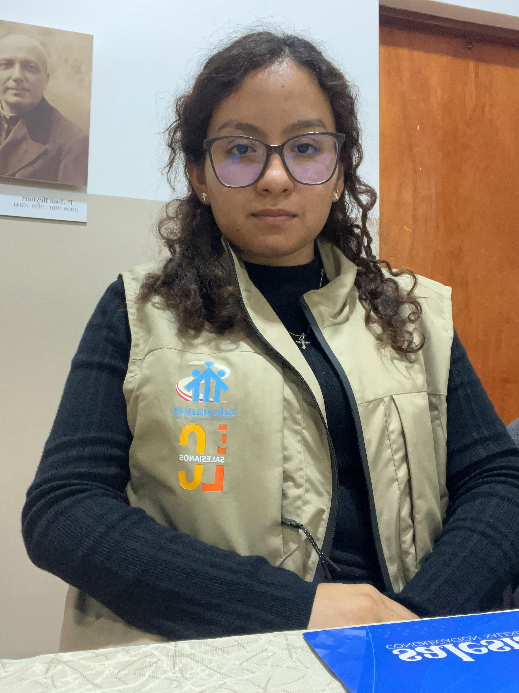
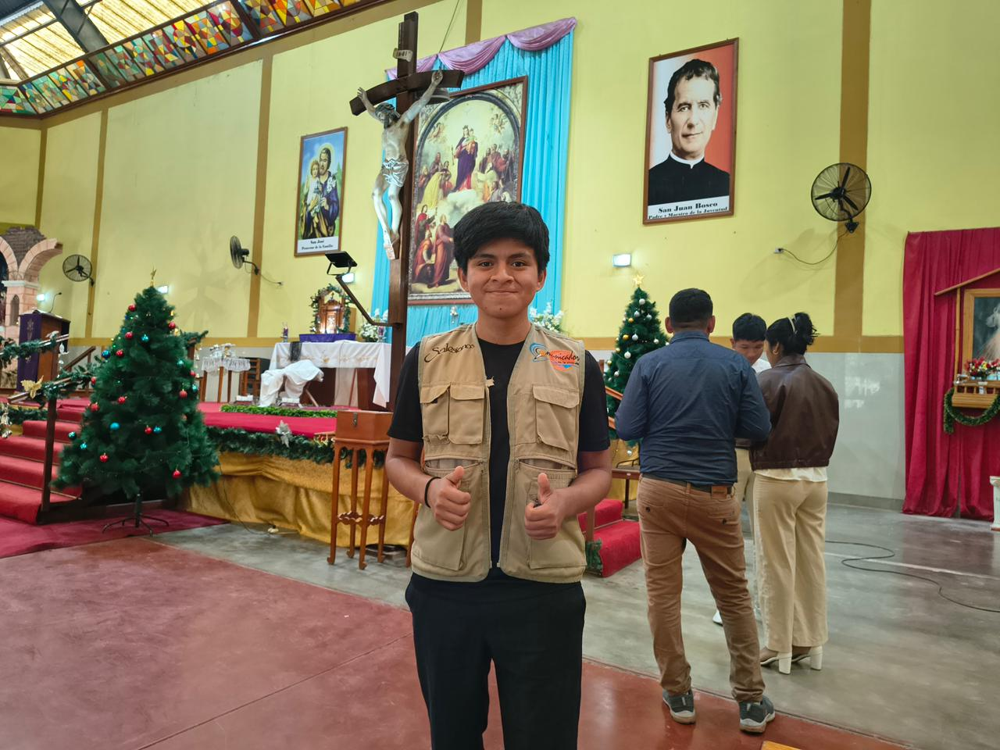
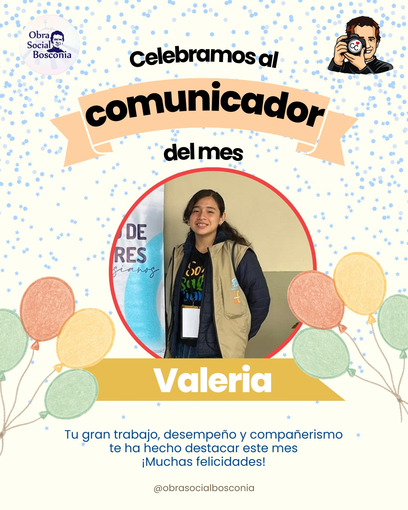

"Comunicando con pasión, evangelizando con el corazón"
Únete a nosotrosFormar jóvenes comunicadores comprometidos con la verdad y el servicio social a través de los medios digitales.
Ser la comunidad referente en comunicación juvenil con valores, impactando positivamente en la sociedad.

Coordinadora
"Haz lo que amas y hazlo increíble"

Coordinador
"Aporta tu granito de arena para un mundo mejor"

Para unirte a la comunidad, el primer paso es que te conozcamos. Graba un video de máximo 1 minuto respondiendo:
Valoramos especialmente tu sinceridad y claridad vocacional. Envía tu video a nuestro correo oficial con el asunto: "POSTULACIÓN - [Tu Nombre]"